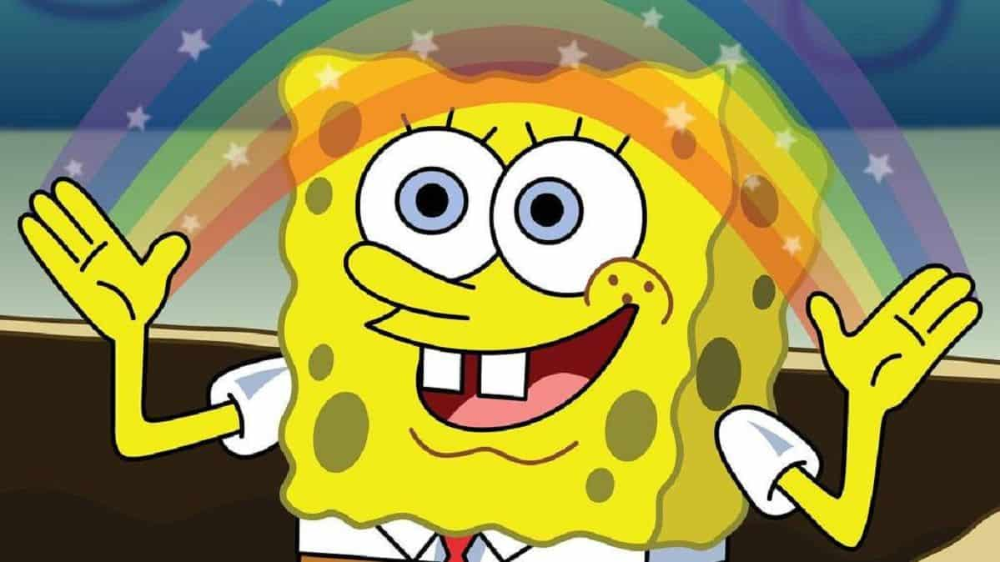

"Bob Esponja" é uma série animada que se passa na cidade submarina de Fenda do Biquíni e segue as aventuras e desventuras de um otimista e alegre esponja marinha chamado Bob Esponja Calça Quadrada. Ele trabalha como cozinheiro no Siri Cascudo, um restaurante famoso por seus hambúrgueres de siri, onde é supervisionado pelo avarento Sr. Sirigueijo. Bob Esponja é constantemente acompanhado por seus amigos: Patrick Estrela, uma estrela-do-mar ingênua; Sandy Bochechas, uma esquilo texana que vive numa cúpula de ar subaquática; e seu vizinho, Lula Molusco, um molusco rabugento.
A série é conhecida por seu humor absurdo e situacional, explorando temas como amizade, trabalho em equipe e alegria na vida cotidiana. Bob Esponja e seus amigos frequentemente se envolvem em aventuras malucas e enfrentam desafios que testam sua paciência e imaginação. Ao longo dos episódios, o show também explora diversos cenários e personagens excêntricos que habitam Fenda do Biquíni, incluindo o vilão Plâncton, que constantemente tenta roubar a fórmula secreta do hambúrguer de siri para o seu próprio restaurante, o Balde de Lixo.
"Bob Esponja" é uma série que transcende gerações, conquistando tanto crianças quanto adultos com seu humor único e personagens carismáticos. A essência do show está na energia positiva e no otimismo contagiante de Bob Esponja, que enfrenta cada desafio com uma mistura de inocência e determinação. Seu amor pelo trabalho no Siri Cascudo e sua amizade inabalável com Patrick Estrela são temas centrais que ressoam com o público, transmitindo mensagens de amizade verdadeira e resiliência.
Além dos protagonistas, a série é rica em personagens secundários que acrescentam camadas à narrativa. Sandy Bochechas traz uma perspectiva diferente como uma esquilo do Texas que adora aventuras e ciência, enquanto Lula Molusco, apesar de sua personalidade rabugenta, muitas vezes revela um lado mais sensível e artístico. O Sr. Sirigueijo, com sua natureza mesquinha mas também paternal, e Plâncton, com suas tentativas cômicas e frustradas de alcançar o sucesso, completam o elenco diversificado e multifacetado de Fenda do Biquíni.Além do humor e da caracterização dos personagens, "Bob Esponja" também é conhecido por sua animação vibrante e estilo visual único, que captura a atmosfera colorida e lúdica do mundo subaquático onde se passa a história. A combinação de comédia inteligente, lições de vida sutis e um senso de maravilha constante faz de "Bob Esponja" um clássico duradouro na televisão, deixando um legado que continua a influenciar e entreter públicos ao redor do mundo.
Em essência, "Bob Esponja" é uma celebração da excentricidade e da diversão despretensiosa, cativando crianças e adultos com seu humor inteligente e personagens memoráveis que continuam a ser ícones da cultura pop.